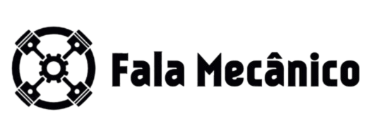
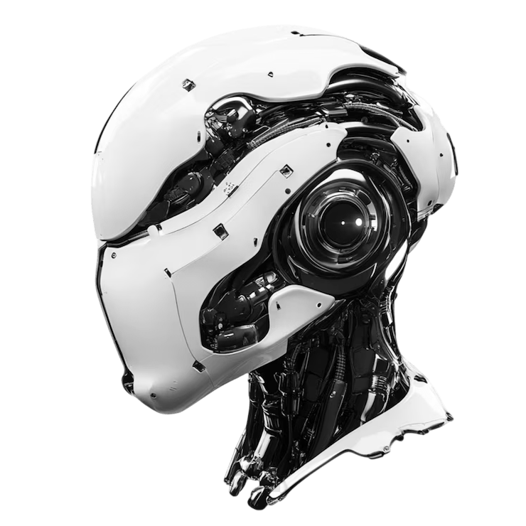

Seu novo mecânico 24h no WhatsApp
Tire dúvidas Mecânicas com um toque.
Seu novo mecânico 24h no WhatsApp
Chega de esperar oficina abrir ou buscar vídeos confusos na internet. Adicione o contato do nosso robô e
tenha acesso a respostas rápidas, técnicas e claras — a qualquer hora do dia.
